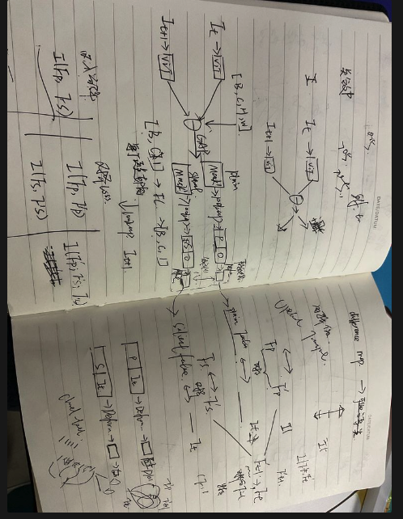
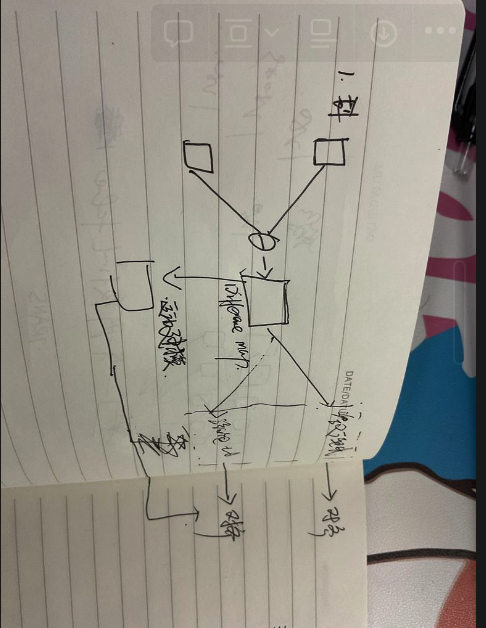

Hierarchical Motion-Aware Temporal Alignment for Video-Based Human Pose Estimation
Motivation:
- 要证明一下现有的方法直接进行整体图像对齐，可能会趋近于拟合全局图像变化平均值，导致对齐整体力度不够 （效果不明显）
- 而对于姿态估计来说，邻近帧通常不会整体变化很大(人体躯干)，但是局部关节变化通常很显著，能捕获到局部变化至关重要
- 我们提出可学习的运动感知的特征对齐，分别处理不同的区域，
- 分离出motion比较小和比较大的区域，进行分别对齐
- 传统数字图像处理方法需要手动设置阈值，我们提出一套可学习的方案自动识别和局部显著的运动特征区域
- 两帧做差
- maxpool→Avg > 阈值 >过滤 分别生成不同程度的pixel-wise的Motion map （可以用Convolution平滑）
- 分别对齐
- 这个点自监督可选 （Optional）
- 对齐之后用Optimal Transport Loss，因为可以维持原始的特征结构，又能让两帧更相似 ，优于L1 L2 等等loss
- SOTA performance
写作创新点：
- 分层对齐框架
- 针对该对齐范式，提出对应的直接约束
图像分为 内容 + 风格（位置） 对齐就是提取位置属性
所以在图像特征对齐中，semantic level已经是严格对齐的，主要问题就是spatial level的对齐
问题依然存在：
- 怎么去做到spatial change aware？这里的aware是按pixel-level还是channel-level？
进一步改进idea：
-
现有方法根据视觉特征直接对整体的图像进行对齐
- 整体对齐：同时对齐变化平滑和变化剧烈的区域可能是困难的，例如对于仿射变换会拟合平均值；对于Deformable convolution来说，由于外观特征都比较像，受限于卷机核尺寸，难以把握大的空间变化
- 直接对齐：直接聚合两帧的视觉特征来学习对齐参数offsets，而相邻帧特征通常很相似，这种做法对于高度相似的两帧是不利的 —— 我们提出渐进式对齐框架，1⃣️显式建模两帧之间的动态上下文，基于运动信息进行调制，显式学习细粒度的offsets，2⃣️随后为了兼顾整体语义信息，基于整体视觉特征学习semantic-level的offsets
现有方法是motion-unaware的
运动导向的分层对齐框架
- 根据变化大小激活相应的区域，这一步应该同时激活source和tagret的区域，用share的参数来提取 （目前方法只激活的target区域 和source全图进行对齐 不太好）
- 提取好之后对齐的时候，用两步对齐法motion-appearance对齐法，根绝差分map计算运动特征，首先根据运动特征（和辅助帧的特征）生成offset进行运动对齐；随后用辅助帧+关键帧特征来生成offset（语义优化）
-
对于对齐的监督现有方法一般无监督 或者通过图像重建来实现，并非直接的对齐目标


目前模型效果还没有backbone好，我感觉可以简化一下模型
- 先测试一下特征融合操作
- 然后试试baseline分区域对齐模型
不一样的点：
- 分层对齐框架，自适应对不同的region进行对齐
- 对于不同区域的特征，我们提出motion-guided的对齐流程
- 对齐之后的监督
两个方案：
- 用transformer直接聚合
- 全部CNN：SENet + CNN聚合
测试epoch-8 是85.2，虽然说可能会进一步提升，但是这个idea本身总感觉似乎有点奇怪，不是很创新，分层对齐
- 目前对齐本身的效果依然存疑，不一定有效果
- 变化显著和平缓区域的识别
- 对齐的手段太过于平淡 [ 我觉得块是目前主要诟病的地方，即网络结构问题～如果能换成基于Transformer的会好些，然后开发打磨一下对齐的结构 ]
- 目前的效果总是低于backbone，我自己分析，是第一步，通道数1280直接降到512，这步信息损失很大，明天可视化特征图看看，分析一下问题出在哪里
- 最近计划
- 最近继续看一些特征对齐论文，定向读一读，看看不同领域的对齐，然后做一个新模型；
- 分析一下在大通道数下如何让特征的损失最小 [类似蒸馏的思想]
4-19夜反思
时序处理可以划分多个level的clip分别提取时序特征，再融合；
关键帧作为Q，KV为辅助帧进行融合
- 通过可视化特征发现，加了se-attention之后，特征变成马赛克了；
- 解决一下“曝光过度”特征的问题；
- 多帧特征聚合导致特征会曝光过度；说明聚合可以根据相似度来
明天试试把VIT提取的特征写到本地，当成数据读进来
-行不通 训练有数据增强 所以不能直接把特征写到本地
重新整理创新点
感觉从运动大小的角度直接说有点俗，应该是人体适应的特征对齐 Human-Adaptive Temporal Alignment
人体图像的特点：
- 背景不重要
- 不会发生剧烈的运动变化
- body区域变化不大
- end-point joint区域变化大
DCN可以学习channel-level的offset,但是channel通常也是global-context的信息，所以依然是学习耦合的offset，不能很好的关注到局部的关节特征的对齐
- 人体body主体区域通常变化较小，而末端关节自由度高导致运动变化通常较大，现有方法用单个DCN进行对齐需要泛化很好地同时适应不同幅度的运动，难度很大，产生了不好的姿态估计；
2023-5-1
- Motion-Aware 的分层对齐机制，自适应地识别不同幅度的运动区域分别进行对齐，可以更好的关注末端关节的特征恢复；
- Instead 隐式根据特征相似性学习对齐， 显式建模运动信息引导offset采样，使优化更容易
《FDAN: Flow-guided Deformable Alignment Network for Video Super-Resolution》指出可形变卷积对于大的运动依然无法很好的处理，而这对于姿态估计来说是很致命的，因为局部端点的关节通常运动幅度大易被遮挡，只对齐变化小的body-region势必会影响性能。分析原因：
- 人体运动通常不会发生突变，目标运动具有均匀性，在短期内人的主体区域通常变化较小；而end-point的关节区域运动自由度高导致变化较大。
- 对齐均在feature-level进行，对应的每个pixel都要对齐；feature通常包含的是global-context，整体变化较小，直接使用可形变卷积进行耦合地对齐global-context，模型会偏向更整体的变化小的视觉内容；而局部关节则容易被忽略，产生较差的结果
- 因此我们提出在全局特征语义对齐的基础上，引入局部分解增强的细节内容对齐
- 具体地，我们将不同幅度运动的视觉内容进行分解，分层进行salient-plain的对齐，以更好地学习局部关节的对齐
- 考虑到局部关节较大的运动，我们显式地用temporal-difference建模运动信息来引导kernel offset的学习
- 所以以上就是第一个创新点，解纠缠的特征对齐框架
- 第二个创新点：
- 感知任务中的特征对齐（语义分割，姿态估计）通常只有label相关信息约束，这难以约束特征对齐的学习；直觉的图像重建约束又增加了学习难度，因为我们只需要学习关节位置，无需关注其他视觉信息例如图像纹理等，因此我们提出一个基于互信息的特征对齐约束，通过最小化局部对齐前后特征的
测量不同部位关节的运动量
- 测量一下具体的变化，给出量化值 （等效果好了）
一直超不过Backbone，做几个baseline测试下
- 融合backbone的多帧特征
- 直接融合最后抽象的特征
- 多尺度思想
假如运动引导的transformer可以解决大幅变换问题，那么为什么不直接对全局采用运动引导呢
得分析出区域进行运动引导的好处
晚上用HRNet作为backbone